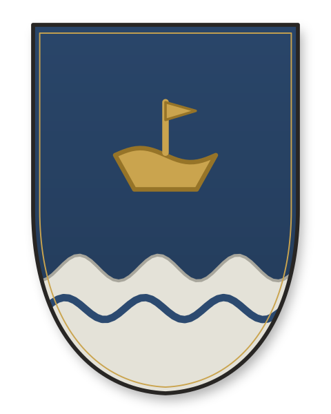
Azure, a wavy base argent, a boat Or — the house that kept the boat.

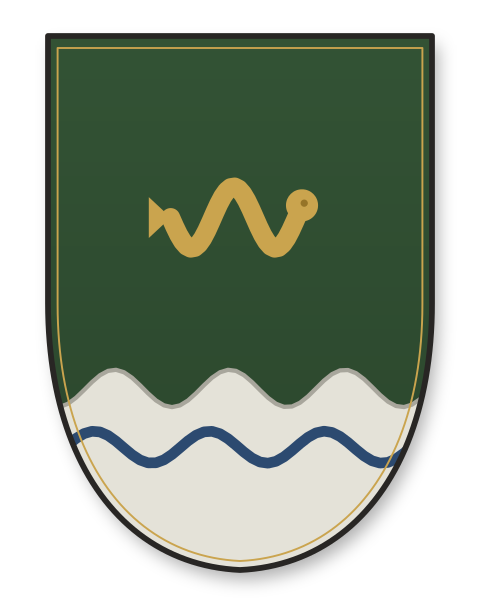
Vert, a wavy base argent, an eel Or — went ashore to fish and thrived.

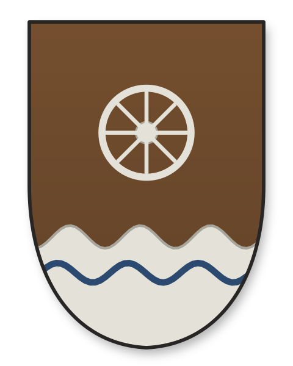
Tenné, a wavy base argent, a cartwheel argent — went to the cart.

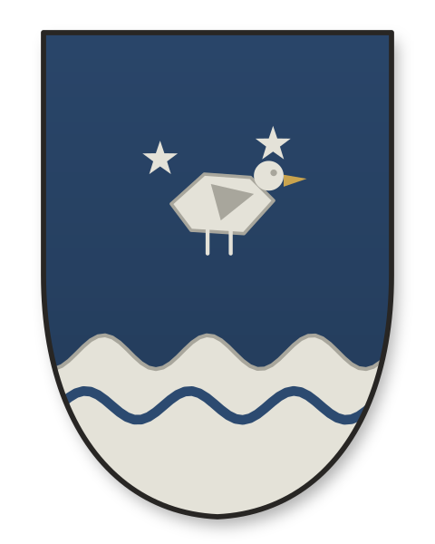
Azure, a wavy base argent, a bird argent between mullets — the Long Departure.

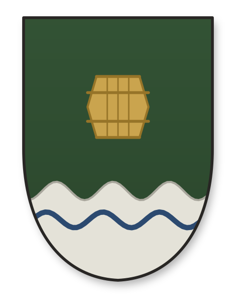
Vert, a wavy base argent, a tun Or — went to barrel and hide.

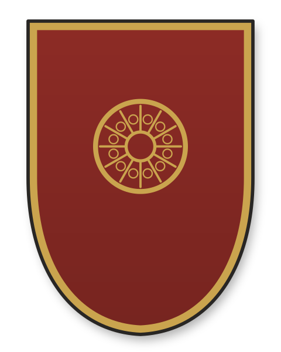
Gules, a rose-window Or within a bordure Or — the master glaziers of Idonea's line.

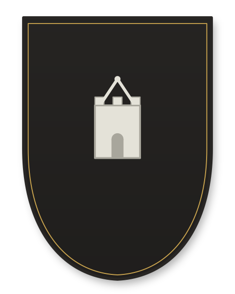
Sable, a tower embattled argent beneath a compass — warden of the masons' lodge.

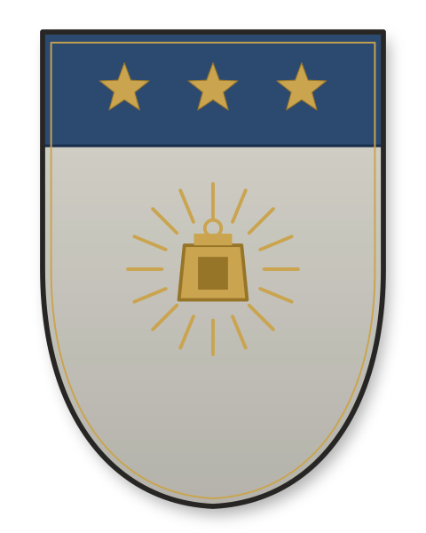
Argent, a lantern radiant Or, on a chief azure three mullets Or — the Praelucent's arms.

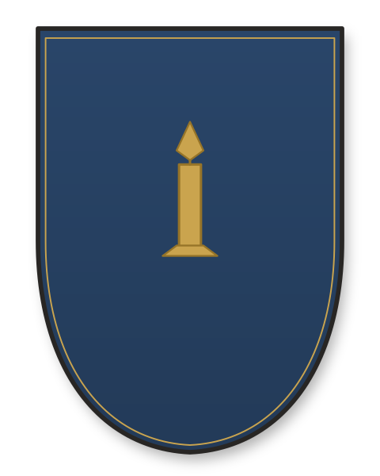
Azure, a candle argent enflamed Or — the wax-house of the Wickmarket.

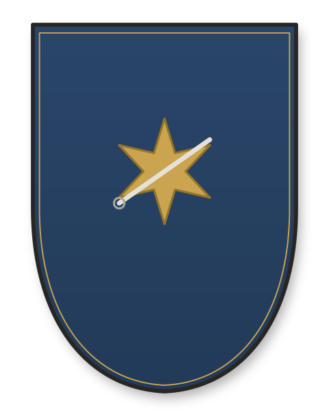
Azure, an estoile Or and a needle argent in bend — she charts the sky in thread.

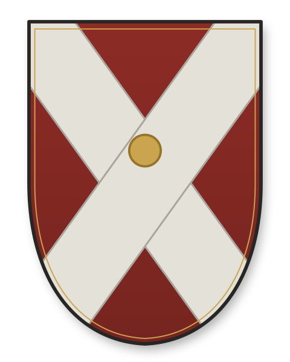
Gules, a saltire argent, a roundel Or in the crossing — the salt house (a *saltire* for salt).

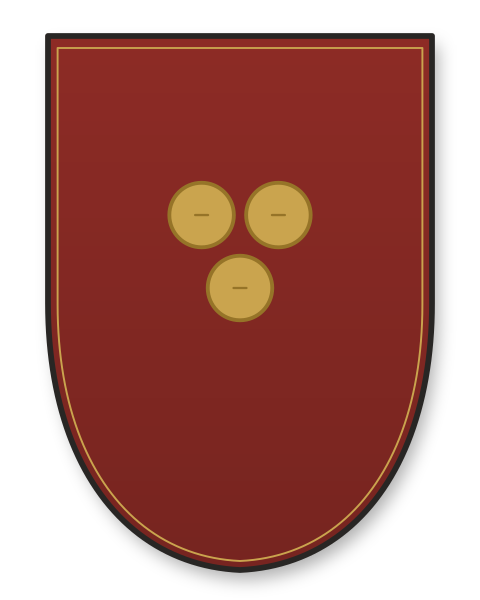
Gules, three bezants Or — the money and paper house of the Tallage.

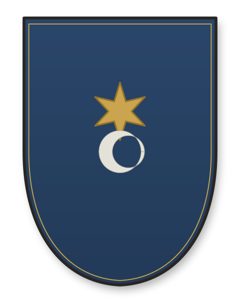
Azure, an estoile Or above a crescent argent — the physician-astronomer.

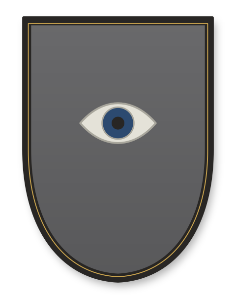
Grey, an eye argent within a bordure sable — the master of the Custody of the Eye.

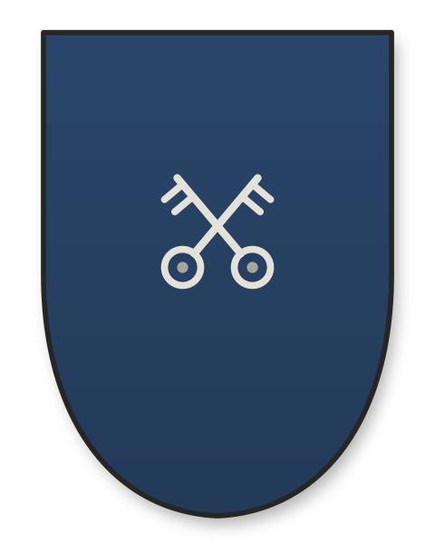
Azure, two keys in saltire argent — the vergers who keep the Lanthorn's doors.

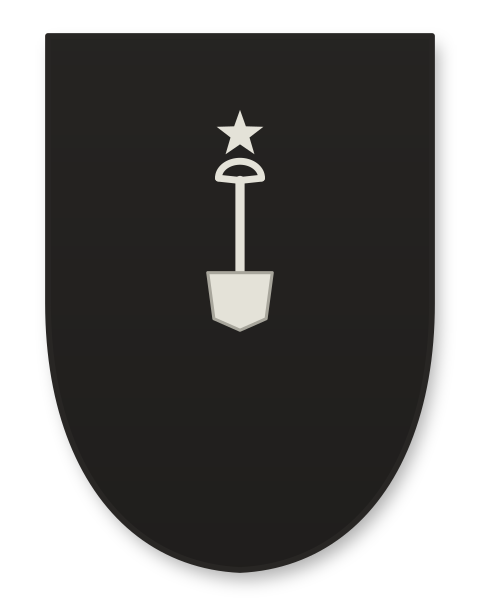
Sable, a spade argent, a mullet in chief argent — the sexton's house of Saint Maren.

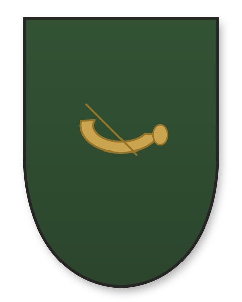
Vert, a hunting-horn Or — the criers whose voice runs before the bells.

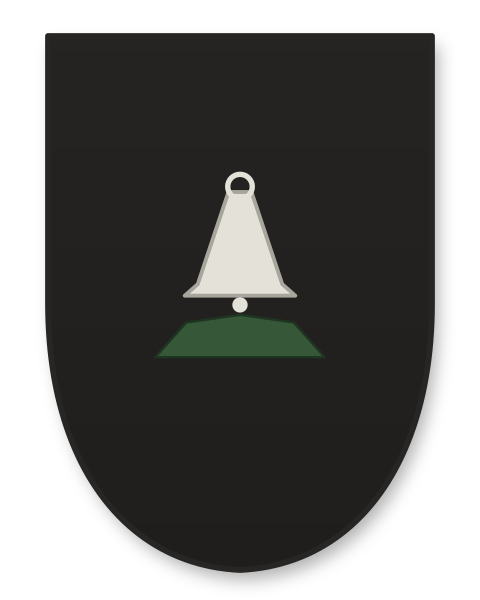
Sable, a bell argent upon a mount vert — the bellfounder with a foot in the Grey Press.

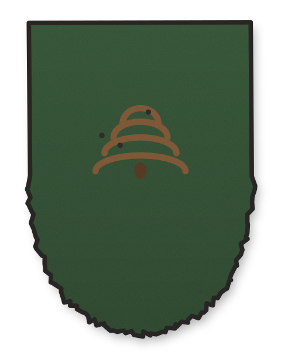
Vert, a skep tenné with bees — canting arms a Skep drew himself; nobody granted them.

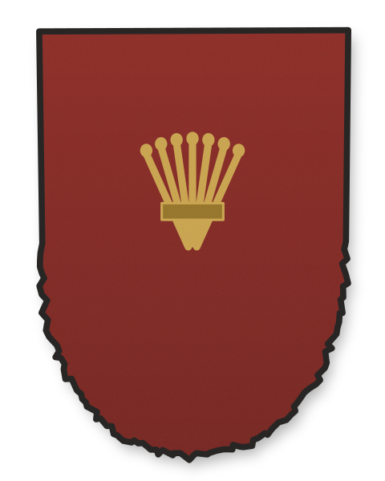
Gules, a garb Or — assumed arms of a lettered house with more letters than coin.